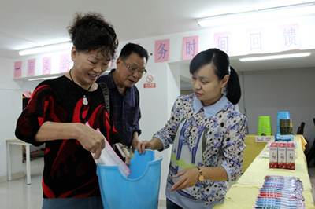
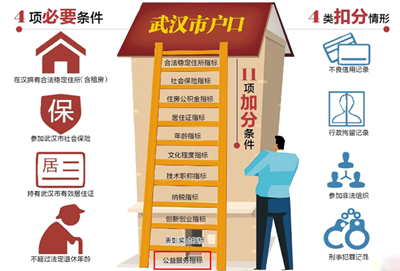
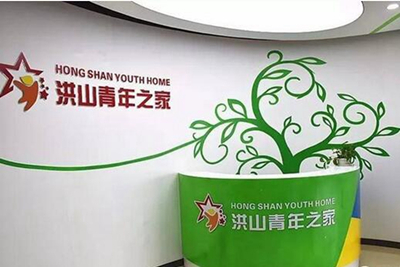
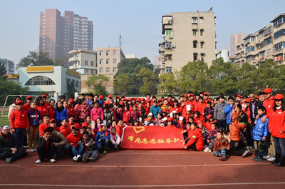

志愿服务点亮江城人公益梦 创新撑起"志愿者之城"新高度
桂电志愿者网 日期：2017-08-29 来源：中国文明网
武汉,一座因水而兴、得水独厚的巨大水城,依绵绵江水而滋生不竭创新活力。近年来,武汉持续拓宽创新领域,加之“志愿者之城”建设稳步推进,志愿服务模式不断创新,公益精神广泛传导并落地生根,不同领域的志愿者“聚作一团火,散成满天星”,构建起了志愿服务的千树繁花,热情盛开在江城的角角落落。
“时间银行”通存通兑 回馈机制助推志愿服务蓬勃开展
“我认为4个小时的志愿服务时间可以兑换一张价值人民币5元的爱心券,爱心券应该可以转移……”近日,为了推动社区治理,武汉东亭社区设立社区志愿者服务“时间银行”,“时间银行”存入的是每位志愿者服务的时间,该时间可以兑换相应的服务和物资。目前,东亭社区有129名居民参加了社区志愿者服务“时间银行”。今年74岁的李玉清老人是一名书法家,他经常利用业余时间教社区居民书法,半年就积攒了1000余分钟。“参加志愿服务‘时间银行’活动就没有想到要回报,但是这种方式非常好,是对志愿服务的一种鼓励,是我们的精神财富。”李玉清说。

志愿者用储蓄时间兑换自己心仪的生活用品
不独东亭社区,早在2014年初,武汉百步亭社区即开始设立志愿服务“时间银行”回馈社区志愿者。志愿者从事志愿服务的日期、内容/项目、时数和服务对象都在志愿服务记录本上进行详细记录。“志愿服务无价,回馈绝不可能等值。我们提倡有时间做志愿者,也要记得把关爱给志愿者。”一居委会书记杨光杰说,目前,回馈活动已纳入常态工作,每季度举行一次。
志愿服务为打工族“落地生根”积分 助人有“得”提升归属感
“外地人有稳定住房和工作并参加社保,有参加过献血等公益活动的,今后都可以获得积分,攒够相应积分就能申请落户武汉。”近来出台的《武汉市积分入户管理办法(试行)》中明确规定了公益服务指标(最高10分):无偿献血一次积2分,5年内参加志愿服务每10小时积1分。

武汉将志愿者服务纳入居住证量化指标体系加分内容
志愿者中有许多是城市外来人员,在不计得失奉献他人的同时,自身也逐渐从服务嘉许与回馈制度中受益。武汉将志愿服务纳入积分落户政策,为这些打工族们扎根第二故乡提供了优先可能,提升了志愿服务的社会认同感和志愿者的社会礼遇度以及城市归属感,激励着更多人崇德向善,助推志愿服务走得更久、更远。
“互联网+”助力志愿服务 汇聚民力惠及民生
日前,中国志愿服务基金会、中国志愿服务联合会、社区志愿服务全国联络总站在湖北武汉百步亭社区召开“邻里守望”志愿服务项目暨社区志愿服务全国联络总站工作推进会,大会开通全国首家志愿服务在线公益平台--中国志愿服务基金会在线募捐平台,启动“邻里守望”志愿服务项目在线募捐活动。
全国首家志愿服务在线公益平台启动现场
作为全国首家志愿服务在线公益平台,中国志愿服务基金会在线公益平台运用“互联网+”,一方面,降低了志愿服务的参与门槛,居民可在线一键发起志愿服务项目,随时随地为全国各地有需要的居民奉献爱心,让“人人可公益”成为现实;另一方面,居民可通过该平台在线查询每一笔善款的去向,为志愿服务活动的开展提供了阳光和雨露。
社区与高校团队相互“点单” 打造独具特色的志愿服务品牌
如今,在武汉市洪山区,居民需要什么志愿服务,可以到社区去“点单”,选择相关的大学生服务团队。高校也会根据社区反馈的信息,对志愿服务过程中表现突出的大学生,在奖学金评比、推荐择业、留校任职等方面予以倾斜。3月,洪山区成立首家实体青年服务门店--“洪山青年之家”,在全区推广社区与高校志愿团队相互点单模式。

洪山首家实体青年服务门店“洪山青年之家”
据了解,将志愿服务活动“菜单化”、让社区和志愿团队相互自由“点单”,是团武汉市洪山区委推出的区校结对共建志愿服务新尝试。
社区按需选择志愿者团队
洪山东山亭社区是新建的还建小区,离高校较远,多年来只有武汉纺织学院的大学生零星过来服务。3月,社区通过青年之家了解到,洪山区有300多家志愿者团队,经过沟通,最终选择和华中师范大学教育学院童心志愿协会签约。如今,洪山区154个社区都拥有至少两个团队进行个性化服务,居民对志愿服务满意程度也大大提高。
让社区和志愿者共赢
洪山区区校结对共建不断走向专业化、常态化、品牌化,让社区和志愿者同时成为志愿服务活动的“受益人”。
珞南街博苑社区是全国科普示范社区,为提高全社区居民的科学素养,社区建立了“乐学科普体验馆”“乐学科普民俗文化馆”,并在团区委的引导下与武汉理工大学成功结对。“作为科普示范社区,我们需要科技类的志愿服务。引进3D打印技术项目,由大学生志愿者普及,既让我们社区的科普内容更加丰富,也让大学生的项目得到实践检验。”博苑社区志愿服务负责人张晓芸觉得,这样的结对共建是双赢。
打造“志愿者之城”
借助高校数量多、大学生志愿者资源丰富这一优势,团洪山区委提出了探索打造“志愿者之城”的新目标。截至今年5月31日,与社区结对的高校志愿团队已达326个,涌现出“中国好人”、收到习近平总书记来信鼓励的华中农业大学“本禹志愿服务队”等一批先进典型。

本禹志愿服务队开展志愿服务活动
“融青年之力,建志愿之城”,洪山区委副书记刘前信说,高校与社区结对共建是洪山区独具特色的志愿服务品牌,是利于青年成长和洪山发展的阳光事业,必将为洪山建设大学之城、青年之城、梦想之城、创新之城作出突出贡献。
创新,是一座城市发展的灵魂和内生动力。在江城这片土地上,源源不竭的创新活力已然照亮作为衡量城市文明指数重要指标的志愿服务的发展之路,撑起打造大武汉“志愿者之城”的新高度,成为城市文明的又一闪亮名片。
【责任编辑：中国文明网】